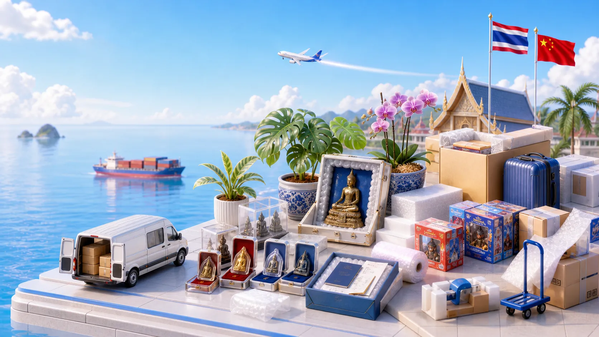

直接答案：泰国寄中国哪些不能寄？
泰国寄中国不能寄的是危险品与违禁物品，包括易燃易爆、腐蚀、放射性等危险品，毒品与管制物品，武器弹药，假冒品牌商品，现金与有价票据。食品、液体、粉末、电池、药品、植物、宠物、燕窝、贵重品属于需审核品类，要按具体货物逐票确认。普通衣物、日用品、已审核的包装食品与特产一般可以咨询寄中国。具体以承运方与海关最新规定为准。
一般可寄清单
| 品类 | 举例 | 说明 |
|---|---|---|
| 普通衣物与日用品 | 衣服、鞋子、包、普通日用品 | 按实际货物确认包装与线路 |
| 已审核的包装食品与特产 | 零食、果干、咖啡、茶叶、伴手礼 | 先审核配料、保质期、原包装与数量 |
| 伴手礼与工艺品 | 手工艺品、陶瓷、纪念品、乳胶制品 | 易碎品与特殊材质要单独审核包装 |
| 已审核的普通电子产品 | 不含问题电池的手机、电脑、平板 | 电池类型、数量与包装发货前必须审核 |
| 佛牌与佛教用品 | 佛牌、佛像、佛教工艺品 | 看材质、尺寸、价值，提前确认 |
以上“一般可寄”指品类上可以咨询，不等于每一件都能寄，具体仍要按货物照片、数量与目的地审核。运费按计费重量与整票条件核算，见泰国寄中国运费说明。
需审核清单
| 品类 | 要看什么 | 说明 |
|---|---|---|
| 食品与零食 | 品名、配料、保质期、原包装、数量、用途 | 个人少量与商业批量按不同规则处理 |
| 液体、粉末、膏体、喷雾 | 成分、形态、包装、数量 | 按成分与形态逐票审核 |
| 带电产品与电池 | 电池类型、数量、价值、包装 | 发货前必须审核 |
| 药品与保健品 | 药品名称、成分、包装、数量、用途 | 监管敏感，逐票审核、个案确认，见泰国药品寄中国说明 |
| 植物、苗木、种子 | 品种、状态、是否带土、数量 | 涉及动植物检疫，逐票审核 |
| 宠物 | 种类、品种、年龄、体重、疫苗与健康资料 | 走宠物托运协调，不按普通快递处理 |
| 燕窝 | 类型、包装、数量、目的地 | 监管较严，逐票审核、以海关最新规定为准 |
| 贵重品与高价值商品 | 品名、价值、包装 | 按实际货物确认方案 |
| 生鲜与冷冻食品 | 商品、包装、目的地 | 可能涉及冷链与检疫，先说明商品再评估 |
禁寄清单
| 品类 | 举例 | 说明 |
|---|---|---|
| 危险品 | 易燃、易爆、腐蚀、放射性物品 | 承运方不接收 |
| 毒品与管制物品 | 毒品、管制药品、违禁化学品 | 违法，一律不接收 |
| 武器弹药 | 枪支、弹药、管制刀具 | 一律不接收 |
| 假冒品牌商品 | 假冒商标、盗版商品 | 涉及侵权，不接收 |
| 现金与有价票据 | 现金、支票、证券 | 不接收，请走正规金融渠道 |
禁寄清单仅作参考，具体以承运方与海关最新规定为准。清单以外的品类如果拿不准，一律先按“需审核”处理：发照片与资料确认后再发货。
怎么开始
第一步，提供货物信息：货物照片、品名、成分、数量、重量与包装状态。第二步，提供路线信息：泰国取件地址与中国收货地址。第三步，确认可寄与方案：审核后确认可寄线路、包装、费用与预计时效，再安排发货。旅游购物可咨询泰国上门取件，小包可走泰国寄中国快递，清关要求见泰国寄中国清关说明。
常见问题
泰国食品可以寄中国吗？
食品属于需审核品类，要看具体品名、配料、保质期、原包装、数量与用途，个人少量与商业批量按不同规则处理。先提供商品照片与资料审核，不承诺所有食品都可以寄。
液体、粉末、喷雾可以寄中国吗？
液体、粉末、膏体与喷雾属于需审核品类，要按成分、形态、包装与数量逐票审核。先提供产品照片、成分与包装信息，审核后再发货，不要直接寄出。
带电池的电子产品可以寄中国吗？
带电产品与电池属于需审核品类，要看电池类型、数量、价值与包装。手机、电脑、平板等设备发货前必须审核，具体以审核结果为准。
药品、保健品可以寄中国吗？
药品与保健品属于监管敏感品类，只能逐票审核、个案确认，不承诺具体药品可寄。提供药品名称、成分、包装与数量后，由客服按实际情况确认。
不确定自己的东西能不能寄，怎么办？
先不要寄出。把货物照片、品名、成分、数量、包装、泰国取件地址与中国目的地发来，审核确认可寄线路与方案后再发货。拿不准就先问，比寄出后被退回更省事。
更新于 2026-11-26